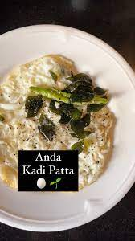

Anda Kaddi Patta

Description
Made with egg whites, curry leaves and green chili, this egg recipe is a steal. Believe me, it gets ready in no
time and could make up for a soothing and wholesome meal.
Ingredients
- 2 egg whites
- Handful of curry leaves
- 1 green chili
Steps
- Take the eggs and break them into a bowl. Carefully, separate the egg yolks and put them into another bowl.
- Whisk the whites a little. Meanwhile, heat a pan and add oil.
- Add green chili and curry leaves when the oil is hot enough. Let it splutter.
- Now, add the curry leaves tempering into the egg whites bowl and mix.
- Thereafter, heat another non-stick pan and pour the egg white mixture on to it.
- Sprinkle salt and black pepper on the egg fry, as per taste.
- Cook from both sides and serve hot.